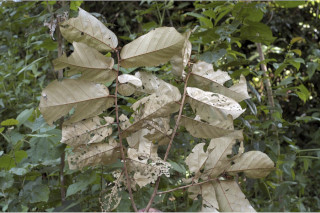
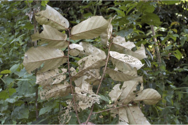
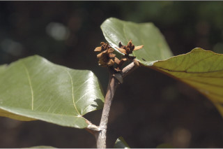
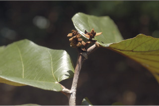

| Leaves : | Leaves simple , alternate , distichous ; stipule lateral , caducous and leaving scar ; petiole up to 1.5 cm long, tomentose , terete ; lamina 11.5-18 (-25.5) x 8.5-13.5 (-17) cm, oblong to pandurate , much variable in sapling, apex acuminate , base cordate , truncate to asymmetric ( peltate in young saplings), glabrous above, silvery pubescent beneath, drying brown above, coriaceous ; 5-nerved at base; midrib canaliculate above; secondary_nerves 5-9 pairs, impressed above, strong beneath; tertiary_nerves obliquely percurrent . |


 

 
